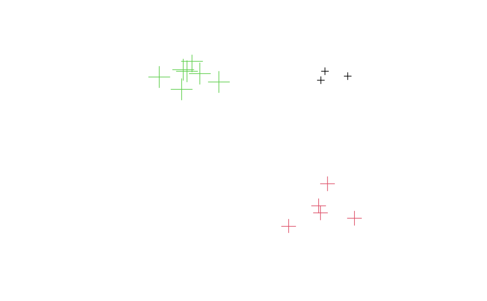

SpatialMultiPointsDataFrame-class.RdClass for spatial attributes that correspond to point sets
# S4 method for class 'SpatialMultiPointsDataFrame'
x[i, j, ..., drop = TRUE]
# S4 method for class 'SpatialMultiPointsDataFrame,data.frame'
coerce(from, to, strict=TRUE)
# S4 method for class 'SpatialMultiPointsDataFrame'
coordinates(obj)
# S4 method for class 'SpatialMultiPointsDataFrame'
show(object)
# S4 method for class 'SpatialMultiPointsDataFrame'
points(x)data:Object of class data.frame containing the attribute data (may or may not contain the coordinates in its columns)
coords:Object of class "list"; the list with coordinates matrices;
points are rows in the matrix, the list length equals the number of rows in the data slot
bbox:Object of class "matrix"; bounding box
proj4string:Object of class "CRS"; projection string
Class "SpatialMultiPoints", directly.
Class "Spatial", by class "SpatialMultiPoints".
# create three sets of points:
cl1 = cbind(rnorm(3, 10), rnorm(3, 10))
cl2 = cbind(rnorm(5, 10), rnorm(5, 0))
cl3 = cbind(rnorm(7, 0), rnorm(7, 10))
mpdf = SpatialMultiPointsDataFrame(list(cl1, cl2, cl3), data.frame(a = 1:3))
mpdf
#> coordinates a
#> 1 (9.561015, 10.40916) 1
#> 1.1 (9.27168, 9.775527) 1
#> 1.2 (11.16353, 10.06249) 1
#> 2 (6.999186, -0.5318854) 2
#> 2.1 (9.114098, 0.9131392) 2
#> 2.2 (9.244407, 0.4187773) 2
#> 2.3 (11.63942, 0.04003302) 2
#> 2.4 (9.73929, 2.470472) 2
#> 3 (2.084812, 9.650787) 3
#> 3.1 (0.7406445, 10.24091) 3
#> 3.2 (-0.4293515, 10.51667) 3
#> 3.3 (0.1892378, 11.10769) 3
#> 3.4 (-0.5419215, 9.132698) 3
#> 3.5 (-2.11942, 10.00115) 3
#> 3.6 (-0.1641934, 10.40547) 3
plot(mpdf, col = mpdf$a, cex = 1:3)

as(mpdf, "data.frame")
#> X1 X2 index a
#> X1 9.5610153 10.40915822 1 1
#> X1.1 9.2716802 9.77552745 1 1
#> X1.2 11.1635273 10.06248677 1 1
#> X2 6.9991860 -0.53188536 2 2
#> X2.1 9.1140978 0.91313918 2 2
#> X2.2 9.2444070 0.41877727 2 2
#> X2.3 11.6394230 0.04003302 2 2
#> X2.4 9.7392898 2.47047235 2 2
#> X3 2.0848116 9.65078723 3 3
#> X3.1 0.7406445 10.24090914 3 3
#> X3.2 -0.4293515 10.51666727 3 3
#> X3.3 0.1892378 11.10769222 3 3
#> X3.4 -0.5419215 9.13269831 3 3
#> X3.5 -2.1194197 10.00114595 3 3
#> X3.6 -0.1641934 10.40547209 3 3
mpdf[1:2,]
#> coordinates a
#> 1 (9.561015, 10.40916) 1
#> 1.1 (9.27168, 9.775527) 1
#> 1.2 (11.16353, 10.06249) 1
#> 2 (6.999186, -0.5318854) 2
#> 2.1 (9.114098, 0.9131392) 2
#> 2.2 (9.244407, 0.4187773) 2
#> 2.3 (11.63942, 0.04003302) 2
#> 2.4 (9.73929, 2.470472) 2